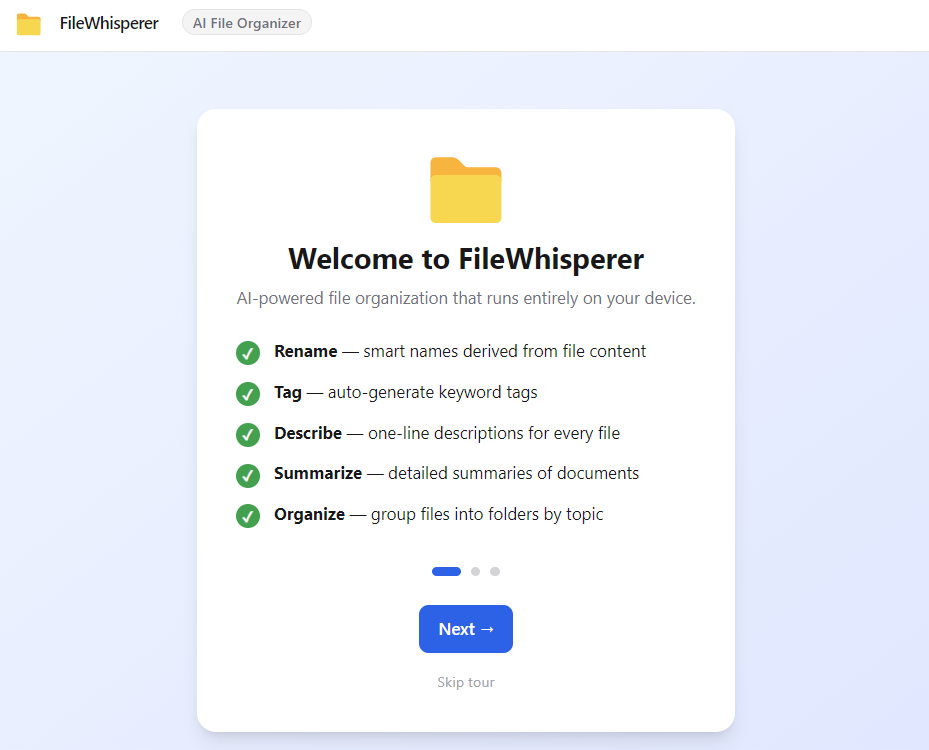
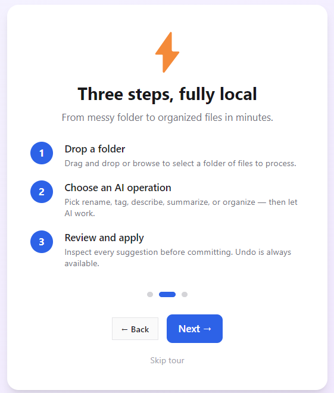
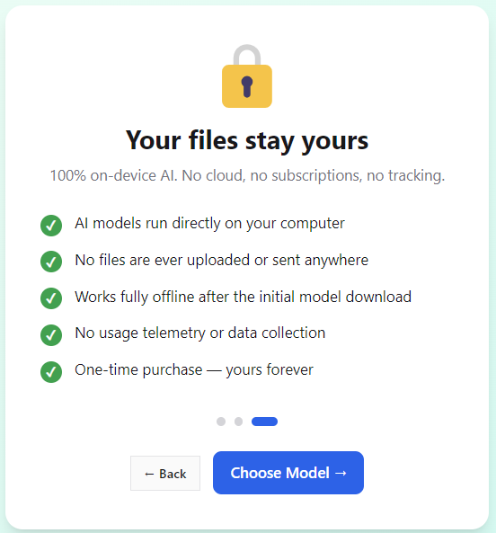
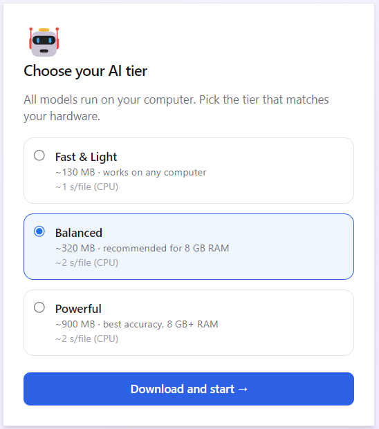
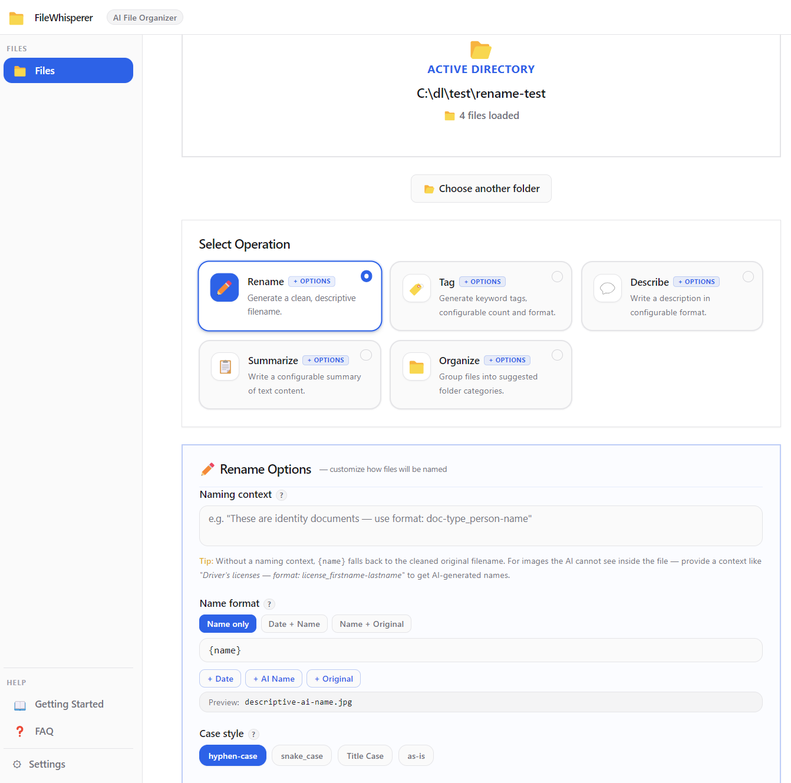
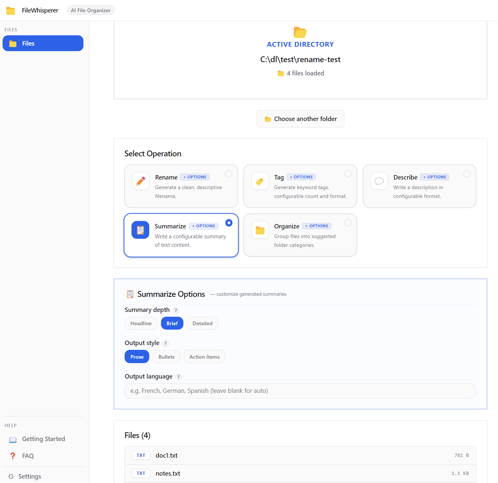
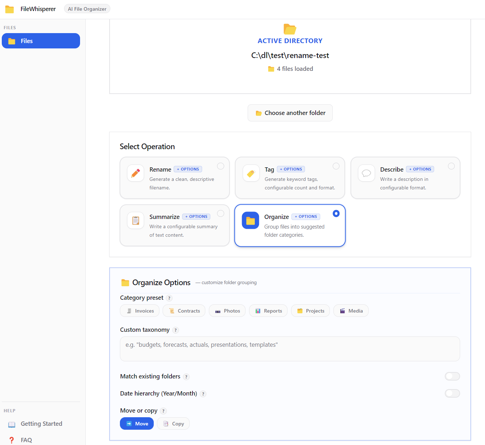

WINDOWS DESKTOP APP · LOCAL AI · ONE-TIME PURCHASE
Drop your files into FileWhisperer AI and get smart names, tags, descriptions, summaries, and folder organization — all generated on your PC, with zero data sent to the cloud.
Click a tab to preview each feature. All processing shown here happens locally on your machine.







Each operation is powered by a local AI model. Select your files, choose an operation, and confirm — the AI handles the rest.
The AI reads your file's content and suggests a clean, descriptive name — no more scan001_final_v3.pdf. You control the output format with options like:
hyphen-case snake_case Title Case {date}-{name} custom themes
Rename a whole folder of files in one pass. Review every suggestion before anything changes on disk.
Generate keyword tags for every file — useful for document management, photo libraries, or building a searchable archive. Configure:
lowercase Title Case #hashtag 3–10 tags any language
Seed the AI with a custom taxonomy (e.g. "invoices, legal, HR") to keep tags consistent across your whole library.
Get a one-paragraph description of each file — perfect for catalogues, knowledge bases, or just knowing what something is before you open it. Choose your format and audience:
sentence bullet points structured neutral / technical / marketing
Output in any language — great for multilingual file libraries.
Turn lengthy documents into digestible takeaways without opening them. Ideal for reports, contracts, and research files. Control depth and style:
headline brief detailed prose / bullets / action items
Every summary is generated locally and stays on your machine — nothing is sent to any server.
The AI groups your files into suggested subfolders based on their content. Before anything moves, you see a full folder-tree preview. You decide to proceed, tweak, or cancel.
move or copy date hierarchy YYYY/MM undo support preset templates
Use presets like Invoices, Contracts, Photos, Reports to anchor the AI's suggestions to your workflow.
No cloud. No API keys. No monthly bill.
FileWhisperer AI ships with an AI model that runs directly inside the app on your CPU or GPU. When you process a file, all inference happens in-process — the text of your files never leaves your computer. This makes it safe for confidential documents, medical records, legal contracts, or anything you wouldn't trust to a cloud service.
Works on flights. Works on air-gapped machines. Works without Wi-Fi. Forever.
| Feature | FileWhisperer AI | Cloud AI tools |
|---|---|---|
| Files sent to external servers | Never | Every request |
| Works offline | Always | Requires internet |
| Subscription required | No — one-time purchase | Monthly fee |
| AI usage limits | Unlimited (local) | Rate limits / credits |
| Safe for sensitive documents | Yes — stays on your PC | Risky |
Drag and drop individual files or entire folders into the app inbox. Supported: PDFs, images, Word docs, text files, spreadsheets, and more.
Pick Rename, Tag, Describe, Summarize, or Organize. Adjust the output options — language, format, depth — then let the local AI process your batch.
Every suggestion is shown before anything changes on disk. Approve the whole batch or tweak individual items. Full undo is available after apply.
Rename and summarize contracts, briefs, and exhibits without uploading to any cloud service.
Organize patient records and research files while keeping HIPAA obligations intact — zero external transmission.
Bulk-rename shoots, generate tags for your stock library, and organize folders by date hierarchy automatically.
Summarize and tag literature files at scale; keep proprietary research data off third-party servers entirely.
Deploy on air-gapped workstations. Clean up shared drives. No cloud subscriptions to manage or audit.
If your Desktop is a graveyard of final_v2_REAL.docx files, FileWhisperer AI will sort it out in minutes.
The 15-day trial is the full app — no features removed, no file limits, no watermarks. Just try it completely free, then decide.
Free
No credit card · No signup
$29 one-time
Pay once — use forever
No. The AI model runs entirely inside the app on your local machine — nothing is transmitted over the network. Your files never leave your PC. This makes it safe to use with sensitive documents like contracts, medical records, or proprietary research.
FileWhisperer AI reads text content and metadata from PDFs, Word documents (.docx), plain text files, images (with EXIF data), spreadsheets, and other common document formats. The AI uses the extracted content to generate names, tags, descriptions, summaries, and folder groupings.
Yes — that's the main use case. Drop an entire folder and FileWhisperer AI processes every file in a single batch. You review all suggestions together before confirming, and full undo is available after any operation.
No. It is a one-time purchase. Buy Pro once and use it forever, including all future updates for that major version. No recurring charges, no API credits, no usage limits.
Windows 10 and Windows 11 (64-bit). Available from the Microsoft Store and as a direct NSIS installer download.
FileWhisperer AI uses a lightweight, quantized AI model optimized for desktop hardware. Processing runs in the background and typically finishes in a few seconds per file. Machines with a modern CPU or any GPU will see faster results.
Only after you confirm. The Organize feature shows you a full folder-tree preview of where every file will go before touching your disk. You can choose between move (files go to new locations) or copy (originals stay, copies go into the new folders). Full undo is available after either mode.
Try the free version and see how fast local AI can turn a folder of chaos into a clean, tagged, named, and summarized library.
Windows 10/11 · 100% offline · No cloud · No subscription